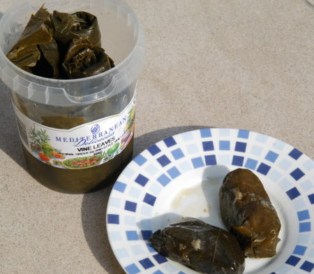

| Zutaten für ca. 18 Dolmades: | |
| 1 Becher | eingelegte Weinblätter |
| 1 dl | Olivenöl |
| 1 Tasse | Reis |
| 2 | Zwiebeln |
| 1/2 Bund | Petersilie |
| 1/2 Bund | Pfefferminze |
| 20 g | Pinienkerne oder |
| 20 g | Sonnenblumenkerne |
| Salz, Pfeffer | |
| wenig | Zitronensaft |
Zutaten bereitstellen
Zwiebeln hacken
Petersilie hacken
Pfefferminze hacken
Öl in einer Pfanne erhitzen und die Zwiebeln bei mittlerer Hitze dünsten, bis sie glasig sind.
Dann ungekochten Reis, Kräuter, Nüsse, Sonnenblumenkerne mit Salz und Pfeffer dazugeben und verrühren.
Den Topf vom Herd nehmen und die Weinblätter mit der harten Reismisschung füllen. Dazu wird 1 EL in die untere Mitte eines Blattes gegeben, die Seiten zur Mitte zusammengeschlagen und dann zur Spitze aufgerollt. Sie sollen nicht übermässig dick ausfallen.
Eine Bratpfanne mit Olivenöl fetten und die Dolmades hineinlegen.
Ca. 4 dl warmes Wasser darüber giessen.
Zum Beschweren einen Teller auf die Dolmades legen damit sie sich nicht ausrollen.
Auf kleiner Flamme ca. 50 Minuten leicht kochen.
Vor dem Servieren die Dolmades mit Zitronensaft beträufeln.
Rezept von verschiedene Webseiten zusammengetragen.
Schmeckte am 6.5.2004 hervorragend.
Am 9.5.2025 waren die Dolmades ungleichmässig gekocht. Einige hatten härere Reiskörner, während andere gut durchgekocht waren. Ich habe sie in der grossen Bratpfanne gekocht. Vielleicht ist die Wärmeverteilung nicht gelichförmig? Auszuprobieren: im Ofen.
Es gibt viele Varianten von diesem Rezept. Es scheint aus dem griechisch/türkischen Raum zu stammen. Ich lernte die Dinger erstmals in Kapstadt bei einer Besichtigung der Mediterranean Delicatessen Fabrik kennen. 2004 habe ich mir selber welche gemacht nachdem mich der Preis im Supermarkt eher auf der stolzen Seite dünkte. Im Vergleich mit den gekauften fiel mir auf, dass ich die Pfefferminze vergessen hatte. Auch sind Pinienkerne in Südafrika schwer erhältlich und selbst wenn - genauso wie in Europa - sehr teuer. Aus diesem Grund nehmen die vom Mediterranean Delicatessen wohl Sonnenblumenkerne. Es gibt auch Rezeptvarianten mit Rosinen. Man kann wohl frei experimentieren. Eine gewisse Fingerfertigkeit beim Rollen der Dolmades ist allerdings nötig.
@LINKBACK_TAG@ @WAKELOCK@